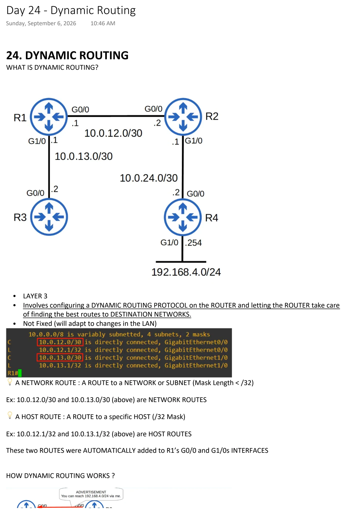
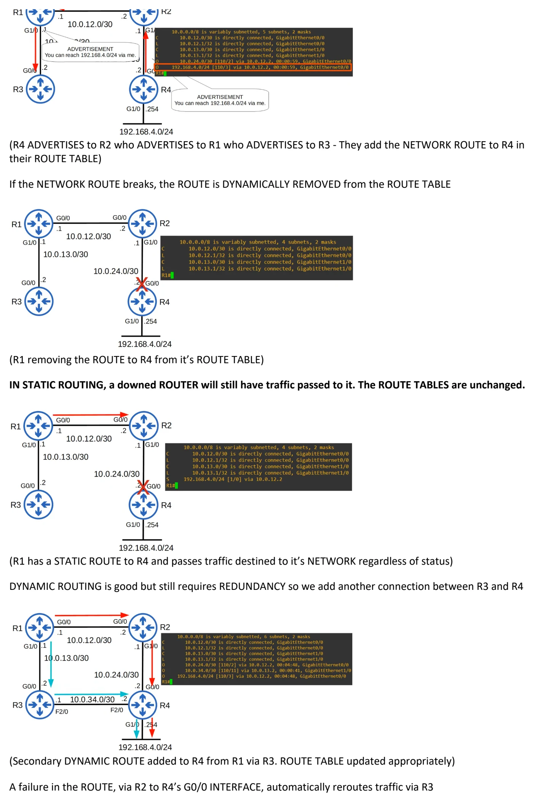
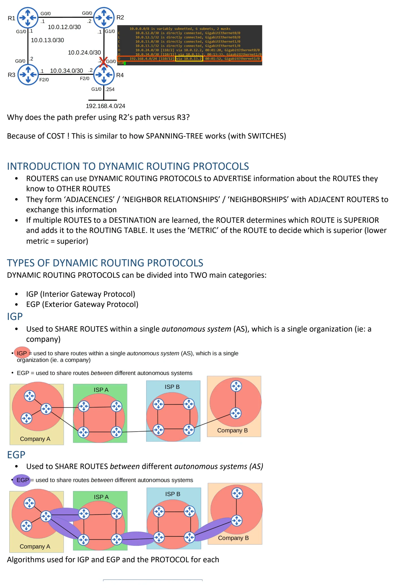
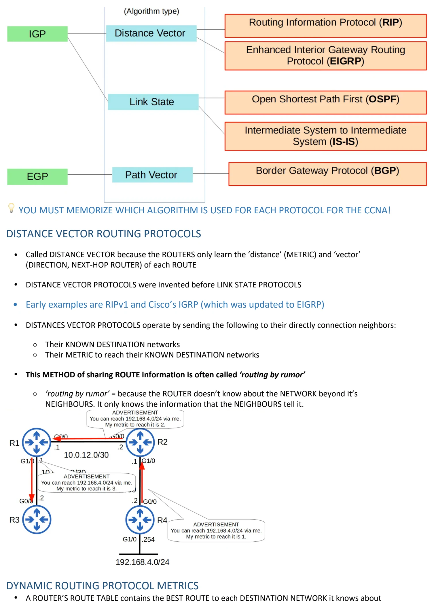
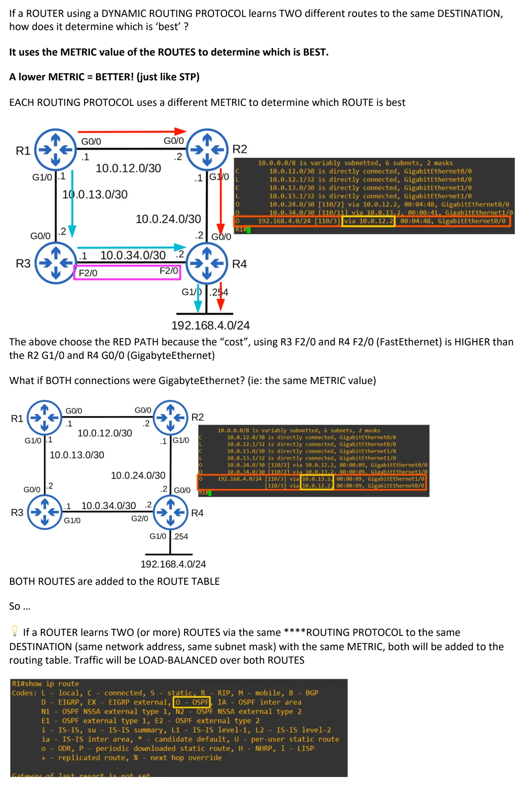
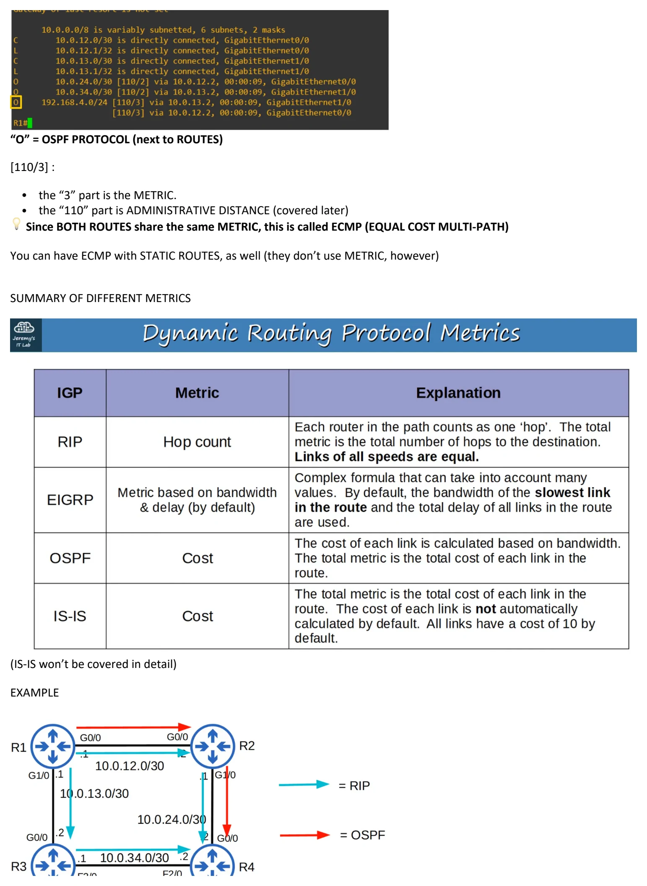
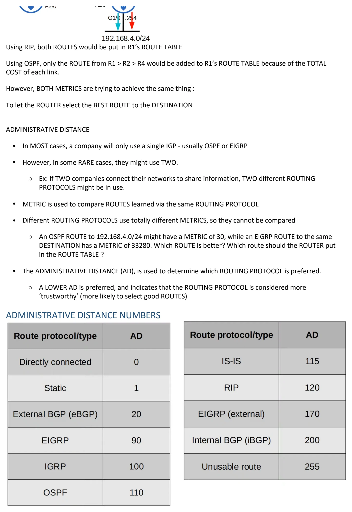
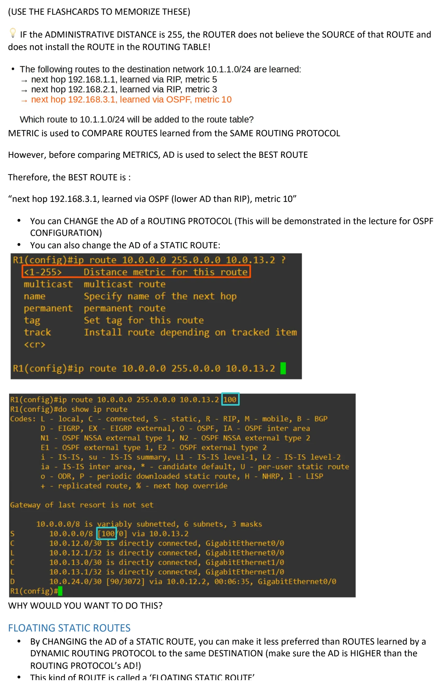
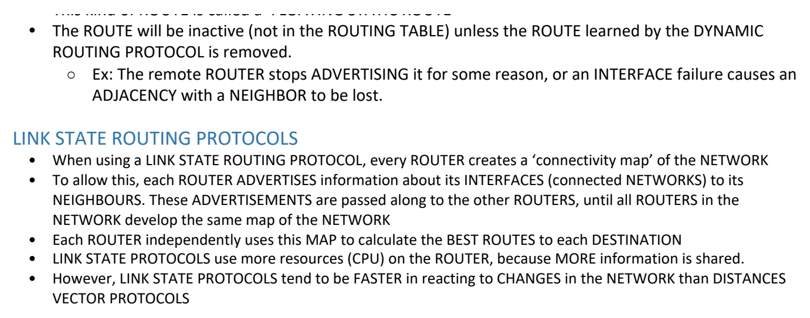

Dynamic Routing
Download original PDF








Text view — Dynamic Routing
Extracted from the original export. Diagrams and some formatting appear in the notes above.
Day 24 - Dynamic Routing Sunday, September 6, 2026 10:46 AM 24. DYNAMIC ROUTING WHAT IS DYNAMIC ROUTING? • LAYER 3 • Involves configuring a DYNAMIC ROUTING PROTOCOL on the ROUTER and letting the ROUTER take care of finding the best routes to DESTINATION NETWORKS. • Not Fixed (will adapt to changes in the LAN) 💡 A NETWORK ROUTE : A ROUTE to a NETWORK or SUBNET (Mask Length < /32) Ex: 10.0.12.0/30 and 10.0.13.0/30 (above) are NETWORK ROUTES 💡 A HOST ROUTE : A ROUTE to a specific HOST (/32 Mask) Ex: 10.0.12.1/32 and 10.0.13.1/32 (above) are HOST ROUTES These two ROUTES were AUTOMATICALLY added to R1’s G0/0 and G1/0s INTERFACES HOW DYNAMIC ROUTING WORKS ? (R4 ADVERTISES to R2 who ADVERTISES to R1 who ADVERTISES to R3 - They add the NETWORK ROUTE to R4 in their ROUTE TABLE) If the NETWORK ROUTE breaks, the ROUTE is DYNAMICALLY REMOVED from the ROUTE TABLE (R1 removing the ROUTE to R4 from it’s ROUTE TABLE) IN STATIC ROUTING, a downed ROUTER will still have traffic passed to it. The ROUTE TABLES are unchanged. (R1 has a STATIC ROUTE to R4 and passes traffic destined to it’s NETWORK regardless of status) DYNAMIC ROUTING is good but still requires REDUNDANCY so we add another connection between R3 and R4 (Secondary DYNAMIC ROUTE added to R4 from R1 via R3. ROUTE TABLE updated appropriately) A failure in the ROUTE, via R2 to R4’s G0/0 INTERFACE, automatically reroutes traffic via R3 Why does the path prefer using R2’s path versus R3? Because of COST ! This is similar to how SPANNING-TREE works (with SWITCHES) INTRODUCTION TO DYNAMIC ROUTING PROTOCOLS • ROUTERS can use DYNAMIC ROUTING PROTOCOLS to ADVERTISE information about the ROUTES they know to OTHER ROUTES • They form ‘ADJACENCIES’ / ‘NEIGHBOR RELATIONSHIPS’ / ‘NEIGHBORSHIPS’ with ADJACENT ROUTERS to exchange this information • If multiple ROUTES to a DESTINATION are learned, the ROUTER determines which ROUTE is SUPERIOR and adds it to the ROUTING TABLE. It uses the ‘METRIC’ of the ROUTE to decide which is superior (lower metric = superior) TYPES OF DYNAMIC ROUTING PROTOCOLS DYNAMIC ROUTING PROTOCOLS can be divided into TWO main categories: • IGP (Interior Gateway Protocol) • EGP (Exterior Gateway Protocol) IGP • Used to SHARE ROUTES within a single autonomous system (AS), which is a single organization (ie: a company) EGP • Used to SHARE ROUTES between different autonomous systems (AS) Algorithms used for IGP and EGP and the PROTOCOL for each 💡 YOU MUST MEMORIZE WHICH ALGORITHM IS USED FOR EACH PROTOCOL FOR THE CCNA! DISTANCE VECTOR ROUTING PROTOCOLS • Called DISTANCE VECTOR because the ROUTERS only learn the ‘distance’ (METRIC) and ‘vector’ (DIRECTION, NEXT-HOP ROUTER) of each ROUTE • DISTANCE VECTOR PROTOCOLS were invented before LINK STATE PROTOCOLS • Early examples are RIPv1 and Cisco’s IGRP (which was updated to EIGRP) • DISTANCES VECTOR PROTOCOLS operate by sending the following to their directly connection neighbors: ○ Their KNOWN DESTINATION networks ○ Their METRIC to reach their KNOWN DESTINATION networks • This METHOD of sharing ROUTE information is often called ‘routing by rumor’ ○ ‘routing by rumor’ = because the ROUTER doesn’t know about the NETWORK beyond it’s NEIGHBOURS. It only knows the information that the NEIGHBOURS tell it. DYNAMIC ROUTING PROTOCOL METRICS • A ROUTER’S ROUTE TABLE contains the BEST ROUTE to each DESTINATION NETWORK it knows about If a ROUTER using a DYNAMIC ROUTING PROTOCOL learns TWO different routes to the same DESTINATION, how does it determine which is ‘best’ ? It uses the METRIC value of the ROUTES to determine which is BEST. A lower METRIC = BETTER! (just like STP) EACH ROUTING PROTOCOL uses a different METRIC to determine which ROUTE is best The above choose the RED PATH because the “cost”, using R3 F2/0 and R4 F2/0 (FastEthernet) is HIGHER than the R2 G1/0 and R4 G0/0 (GigabyteEthernet) What if BOTH connections were GigabyteEthernet? (ie: the same METRIC value) BOTH ROUTES are added to the ROUTE TABLE So … 💡 If a ROUTER learns TWO (or more) ROUTES via the same ****ROUTING PROTOCOL to the same DESTINATION (same network address, same subnet mask) with the same METRIC, both will be added to the routing table. Traffic will be LOAD-BALANCED over both ROUTES “O” = OSPF PROTOCOL (next to ROUTES) [110/3] : • the “3” part is the METRIC. • the “110” part is ADMINISTRATIVE DISTANCE (covered later) 💡 Since BOTH ROUTES share the same METRIC, this is called ECMP (EQUAL COST MULTI-PATH) You can have ECMP with STATIC ROUTES, as well (they don’t use METRIC, however) SUMMARY OF DIFFERENT METRICS (IS-IS won’t be covered in detail) EXAMPLE Using RIP, both ROUTES would be put in R1’s ROUTE TABLE Using OSPF, only the ROUTE from R1 > R2 > R4 would be added to R1’s ROUTE TABLE because of the TOTAL COST of each link. However, BOTH METRICS are trying to achieve the same thing : To let the ROUTER select the BEST ROUTE to the DESTINATION ADMINISTRATIVE DISTANCE • In MOST cases, a company will only use a single IGP - usually OSPF or EIGRP • However, in some RARE cases, they might use TWO. ○ Ex: If TWO companies connect their networks to share information, TWO different ROUTING PROTOCOLS might be in use. • METRIC is used to compare ROUTES learned via the same ROUTING PROTOCOL • Different ROUTING PROTOCOLS use totally different METRICS, so they cannot be compared ○ An OSPF ROUTE to 192.168.4.0/24 might have a METRIC of 30, while an EIGRP ROUTE to the same DESTINATION has a METRIC of 33280. Which ROUTE is better? Which route should the ROUTER put in the ROUTE TABLE ? • The ADMINISTRATIVE DISTANCE (AD), is used to determine which ROUTING PROTOCOL is preferred. ○ A LOWER AD is preferred, and indicates that the ROUTING PROTOCOL is considered more ‘trustworthy’ (more likely to select good ROUTES) ADMINISTRATIVE DISTANCE NUMBERS (USE THE FLASHCARDS TO MEMORIZE THESE) 💡 IF the ADMINISTRATIVE DISTANCE is 255, the ROUTER does not believe the SOURCE of that ROUTE and does not install the ROUTE in the ROUTING TABLE! METRIC is used to COMPARE ROUTES learned from the SAME ROUTING PROTOCOL However, before comparing METRICS, AD is used to select the BEST ROUTE Therefore, the BEST ROUTE is : “next hop 192.168.3.1, learned via OSPF (lower AD than RIP), metric 10” • You can CHANGE the AD of a ROUTING PROTOCOL (This will be demonstrated in the lecture for OSPF CONFIGURATION) • You can also change the AD of a STATIC ROUTE: WHY WOULD YOU WANT TO DO THIS? FLOATING STATIC ROUTES • By CHANGING the AD of a STATIC ROUTE, you can make it less preferred than ROUTES learned by a DYNAMIC ROUTING PROTOCOL to the same DESTINATION (make sure the AD is HIGHER than the ROUTING PROTOCOL’s AD!) • This kind of ROUTE is called a ‘FLOATING STATIC ROUTE’ • The ROUTE will be inactive (not in the ROUTING TABLE) unless the ROUTE learned by the DYNAMIC ROUTING PROTOCOL is removed. ○ Ex: The remote ROUTER stops ADVERTISING it for some reason, or an INTERFACE failure causes an ADJACENCY with a NEIGHBOR to be lost. LINK STATE ROUTING PROTOCOLS • When using a LINK STATE ROUTING PROTOCOL, every ROUTER creates a ‘connectivity map’ of the NETWORK • To allow this, each ROUTER ADVERTISES information about its INTERFACES (connected NETWORKS) to its NEIGHBOURS. These ADVERTISEMENTS are passed along to the other ROUTERS, until all ROUTERS in the NETWORK develop the same map of the NETWORK • Each ROUTER independently uses this MAP to calculate the BEST ROUTES to each DESTINATION • LINK STATE PROTOCOLS use more resources (CPU) on the ROUTER, because MORE information is shared. • However, LINK STATE PROTOCOLS tend to be FASTER in reacting to CHANGES in the NETWORK than DISTANCES VECTOR PROTOCOLS Day 24 - Dynamic Routing Sunday, September 6, 2026 10:46 AM 24. DYNAMIC ROUTING WHAT IS DYNAMIC ROUTING? • LAYER 3 • Involves configuring a DYNAMIC ROUTING PROTOCOL on the ROUTER and letting the ROUTER take care of finding the best routes to DESTINATION NETWORKS. • Not Fixed (will adapt to changes in the LAN) 💡 A NETWORK ROUTE : A ROUTE to a NETWORK or SUBNET (Mask Length < /32) Ex: 10.0.12.0/30 and 10.0.13.0/30 (above) are NETWORK ROUTES 💡 A HOST ROUTE : A ROUTE to a specific HOST (/32 Mask) Ex: 10.0.12.1/32 and 10.0.13.1/32 (above) are HOST ROUTES These two ROUTES were AUTOMATICALLY added to R1’s G0/0 and G1/0s INTERFACES HOW DYNAMIC ROUTING WORKS ? (R4 ADVERTISES to R2 who ADVERTISES to R1 who ADVERTISES to R3 - They add the NETWORK ROUTE to R4 in their ROUTE TABLE) If the NETWORK ROUTE breaks, the ROUTE is DYNAMICALLY REMOVED from the ROUTE TABLE (R1 removing the ROUTE to R4 from it’s ROUTE TABLE) IN STATIC ROUTING, a downed ROUTER will still have traffic passed to it. The ROUTE TABLES are unchanged. (R1 has a STATIC ROUTE to R4 and passes traffic destined to it’s NETWORK regardless of status) DYNAMIC ROUTING is good but still requires REDUNDANCY so we add another connection between R3 and R4 (Secondary DYNAMIC ROUTE added to R4 from R1 via R3. ROUTE TABLE updated appropriately) A failure in the ROUTE, via R2 to R4’s G0/0 INTERFACE, automatically reroutes traffic via R3 Why does the path prefer using R2’s path versus R3? Because of COST ! This is similar to how SPANNING-TREE works (with SWITCHES) INTRODUCTION TO DYNAMIC ROUTING PROTOCOLS • ROUTERS can use DYNAMIC ROUTING PROTOCOLS to ADVERTISE information about the ROUTES they know to OTHER ROUTES • They form ‘ADJACENCIES’ / ‘NEIGHBOR RELATIONSHIPS’ / ‘NEIGHBORSHIPS’ with ADJACENT ROUTERS to exchange this information • If multiple ROUTES to a DESTINATION are learned, the ROUTER determines which ROUTE is SUPERIOR and adds it to the ROUTING TABLE. It uses the ‘METRIC’ of the ROUTE to decide which is superior (lower metric = superior) TYPES OF DYNAMIC ROUTING PROTOCOLS DYNAMIC ROUTING PROTOCOLS can be divided into TWO main categories: • IGP (Interior Gateway Protocol) • EGP (Exterior Gateway Protocol) IGP • Used to SHARE ROUTES within a single autonomous system (AS), which is a single organization (ie: a company) EGP • Used to SHARE ROUTES between different autonomous systems (AS) Algorithms used for IGP and EGP and the PROTOCOL for each 💡 YOU MUST MEMORIZE WHICH ALGORITHM IS USED FOR EACH PROTOCOL FOR THE CCNA! DISTANCE VECTOR ROUTING PROTOCOLS • Called DISTANCE VECTOR because the ROUTERS only learn the ‘distance’ (METRIC) and ‘vector’ (DIRECTION, NEXT-HOP ROUTER) of each ROUTE • DISTANCE VECTOR PROTOCOLS were invented before LINK STATE PROTOCOLS • Early examples are RIPv1 and Cisco’s IGRP (which was updated to EIGRP) • DISTANCES VECTOR PROTOCOLS operate by sending the following to their directly connection neighbors: ○ Their KNOWN DESTINATION networks ○ Their METRIC to reach their KNOWN DESTINATION networks • This METHOD of sharing ROUTE information is often called ‘routing by rumor’ ○ ‘routing by rumor’ = because the ROUTER doesn’t know about the NETWORK beyond it’s NEIGHBOURS. It only knows the information that the NEIGHBOURS tell it. DYNAMIC ROUTING PROTOCOL METRICS • A ROUTER’S ROUTE TABLE contains the BEST ROUTE to each DESTINATION NETWORK it knows about If a ROUTER using a DYNAMIC ROUTING PROTOCOL learns TWO different routes to the same DESTINATION, how does it determine which is ‘best’ ? It uses the METRIC value of the ROUTES to determine which is BEST. A lower METRIC = BETTER! (just like STP) EACH ROUTING PROTOCOL uses a different METRIC to determine which ROUTE is best The above choose the RED PATH because the “cost”, using R3 F2/0 and R4 F2/0 (FastEthernet) is HIGHER than the R2 G1/0 and R4 G0/0 (GigabyteEthernet) What if BOTH connections were GigabyteEthernet? (ie: the same METRIC value) BOTH ROUTES are added to the ROUTE TABLE So … 💡 If a ROUTER learns TWO (or more) ROUTES via the same ****ROUTING PROTOCOL to the same DESTINATION (same network address, same subnet mask) with the same METRIC, both will be added to the routing table. Traffic will be LOAD-BALANCED over both ROUTES “O” = OSPF PROTOCOL (next to ROUTES) [110/3] : • the “3” part is the METRIC. • the “110” part is ADMINISTRATIVE DISTANCE (covered later) 💡 Since BOTH ROUTES share the same METRIC, this is called ECMP (EQUAL COST MULTI-PATH) You can have ECMP with STATIC ROUTES, as well (they don’t use METRIC, however) SUMMARY OF DIFFERENT METRICS (IS-IS won’t be covered in detail) EXAMPLE Using RIP, both ROUTES would be put in R1’s ROUTE TABLE Using OSPF, only the ROUTE from R1 > R2 > R4 would be added to R1’s ROUTE TABLE because of the TOTAL COST of each link. However, BOTH METRICS are trying to achieve the same thing : To let the ROUTER select the BEST ROUTE to the DESTINATION ADMINISTRATIVE DISTANCE • In MOST cases, a company will only use a single IGP - usually OSPF or EIGRP • However, in some RARE cases, they might use TWO. ○ Ex: If TWO companies connect their networks to share information, TWO different ROUTING PROTOCOLS might be in use. • METRIC is used to compare ROUTES learned via the same ROUTING PROTOCOL • Different ROUTING PROTOCOLS use totally different METRICS, so they cannot be compared ○ An OSPF ROUTE to 192.168.4.0/24 might have a METRIC of 30, while an EIGRP ROUTE to the same DESTINATION has a METRIC of 33280. Which ROUTE is better? Which route should the ROUTER put in the ROUTE TABLE ? • The ADMINISTRATIVE DISTANCE (AD), is used to determine which ROUTING PROTOCOL is preferred. ○ A LOWER AD is preferred, and indicates that the ROUTING PROTOCOL is considered more ‘trustworthy’ (more likely to select good ROUTES) ADMINISTRATIVE DISTANCE NUMBERS (USE THE FLASHCARDS TO MEMORIZE THESE) 💡 IF the ADMINISTRATIVE DISTANCE is 255, the ROUTER does not believe the SOURCE of that ROUTE and does not install the ROUTE in the ROUTING TABLE! METRIC is used to COMPARE ROUTES learned from the SAME ROUTING PROTOCOL However, before comparing METRICS, AD is used to select the BEST ROUTE Therefore, the BEST ROUTE is : “next hop 192.168.3.1, learned via OSPF (lower AD than RIP), metric 10” • You can CHANGE the AD of a ROUTING PROTOCOL (This will be demonstrated in the lecture for OSPF CONFIGURATION) • You can also change the AD of a STATIC ROUTE: WHY WOULD YOU WANT TO DO THIS? FLOATING STATIC ROUTES • By CHANGING the AD of a STATIC ROUTE, you can make it less preferred than ROUTES learned by a DYNAMIC ROUTING PROTOCOL to the same DESTINATION (make sure the AD is HIGHER than the ROUTING PROTOCOL’s AD!) • This kind of ROUTE is called a ‘FLOATING STATIC ROUTE’ • The ROUTE will be inactive (not in the ROUTING TABLE) unless the ROUTE learned by the DYNAMIC ROUTING PROTOCOL is removed. ○ Ex: The remote ROUTER stops ADVERTISING it for some reason, or an INTERFACE failure causes an ADJACENCY with a NEIGHBOR to be lost. LINK STATE ROUTING PROTOCOLS • When using a LINK STATE ROUTING PROTOCOL, every ROUTER creates a ‘connectivity map’ of the NETWORK • To allow this, each ROUTER ADVERTISES information about its INTERFACES (connected NETWORKS) to its NEIGHBOURS. These ADVERTISEMENTS are passed along to the other ROUTERS, until all ROUTERS in the NETWORK develop the same map of the NETWORK • Each ROUTER independently uses this MAP to calculate the BEST ROUTES to each DESTINATION • LINK STATE PROTOCOLS use more resources (CPU) on the ROUTER, because MORE information is shared. • However, LINK STATE PROTOCOLS tend to be FASTER in reacting to CHANGES in the NETWORK than DISTANCES VECTOR PROTOCOLS Day 24 - Dynamic Routing Sunday, September 6, 2026 10:46 AM 24. DYNAMIC ROUTING WHAT IS DYNAMIC ROUTING? • LAYER 3 • Involves configuring a DYNAMIC ROUTING PROTOCOL on the ROUTER and letting the ROUTER take care of finding the best routes to DESTINATION NETWORKS. • Not Fixed (will adapt to changes in the LAN) 💡 A NETWORK ROUTE : A ROUTE to a NETWORK or SUBNET (Mask Length < /32) Ex: 10.0.12.0/30 and 10.0.13.0/30 (above) are NETWORK ROUTES 💡 A HOST ROUTE : A ROUTE to a specific HOST (/32 Mask) Ex: 10.0.12.1/32 and 10.0.13.1/32 (above) are HOST ROUTES These two ROUTES were AUTOMATICALLY added to R1’s G0/0 and G1/0s INTERFACES HOW DYNAMIC ROUTING WORKS ? (R4 ADVERTISES to R2 who ADVERTISES to R1 who ADVERTISES to R3 - They add the NETWORK ROUTE to R4 in their ROUTE TABLE) If the NETWORK ROUTE breaks, the ROUTE is DYNAMICALLY REMOVED from the ROUTE TABLE (R1 removing the ROUTE to R4 from it’s ROUTE TABLE) IN STATIC ROUTING, a downed ROUTER will still have traffic passed to it. The ROUTE TABLES are unchanged. (R1 has a STATIC ROUTE to R4 and passes traffic destined to it’s NETWORK regardless of status) DYNAMIC ROUTING is good but still requires REDUNDANCY so we add another connection between R3 and R4 (Secondary DYNAMIC ROUTE added to R4 from R1 via R3. ROUTE TABLE updated appropriately) A failure in the ROUTE, via R2 to R4’s G0/0 INTERFACE, automatically reroutes traffic via R3 Why does the path prefer using R2’s path versus R3? Because of COST ! This is similar to how SPANNING-TREE works (with SWITCHES) INTRODUCTION TO DYNAMIC ROUTING PROTOCOLS • ROUTERS can use DYNAMIC ROUTING PROTOCOLS to ADVERTISE information about the ROUTES they know to OTHER ROUTES • They form ‘ADJACENCIES’ / ‘NEIGHBOR RELATIONSHIPS’ / ‘NEIGHBORSHIPS’ with ADJACENT ROUTERS to exchange this information • If multiple ROUTES to a DESTINATION are learned, the ROUTER determines which ROUTE is SUPERIOR and adds it to the ROUTING TABLE. It uses the ‘METRIC’ of the ROUTE to decide which is superior (lower metric = superior) TYPES OF DYNAMIC ROUTING PROTOCOLS DYNAMIC ROUTING PROTOCOLS can be divided into TWO main categories: • IGP (Interior Gateway Protocol) • EGP (Exterior Gateway Protocol) IGP • Used to SHARE ROUTES within a single autonomous system (AS), which is a single organization (ie: a company) EGP • Used to SHARE ROUTES between different autonomous systems (AS) Algorithms used for IGP and EGP and the PROTOCOL for each 💡 YOU MUST MEMORIZE WHICH ALGORITHM IS USED FOR EACH PROTOCOL FOR THE CCNA! DISTANCE VECTOR ROUTING PROTOCOLS • Called DISTANCE VECTOR because the ROUTERS only learn the ‘distance’ (METRIC) and ‘vector’ (DIRECTION, NEXT-HOP ROUTER) of each ROUTE • DISTANCE VECTOR PROTOCOLS were invented before LINK STATE PROTOCOLS • Early examples are RIPv1 and Cisco’s IGRP (which was updated to EIGRP) • DISTANCES VECTOR PROTOCOLS operate by sending the following to their directly connection neighbors: ○ Their KNOWN DESTINATION networks ○ Their METRIC to reach their KNOWN DESTINATION networks • This METHOD of sharing ROUTE information is often called ‘routing by rumor’ ○ ‘routing by rumor’ = because the ROUTER doesn’t know about the NETWORK beyond it’s NEIGHBOURS. It only knows the information that the NEIGHBOURS tell it. DYNAMIC ROUTING PROTOCOL METRICS • A ROUTER’S ROUTE TABLE contains the BEST ROUTE to each DESTINATION NETWORK it knows about If a ROUTER using a DYNAMIC ROUTING PROTOCOL learns TWO different routes to the same DESTINATION, how does it determine which is ‘best’ ? It uses the METRIC value of the ROUTES to determine which is BEST. A lower METRIC = BETTER! (just like STP) EACH ROUTING PROTOCOL uses a different METRIC to determine which ROUTE is best The above choose the RED PATH because the “cost”, using R3 F2/0 and R4 F2/0 (FastEthernet) is HIGHER than the R2 G1/0 and R4 G0/0 (GigabyteEthernet) What if BOTH connections were GigabyteEthernet? (ie: the same METRIC value) BOTH ROUTES are added to the ROUTE TABLE So … 💡 If a ROUTER learns TWO (or more) ROUTES via the same ****ROUTING PROTOCOL to the same DESTINATION (same network address, same subnet mask) with the same METRIC, both will be added to the routing table. Traffic will be LOAD-BALANCED over both ROUTES “O” = OSPF PROTOCOL (next to ROUTES) [110/3] : • the “3” part is the METRIC. • the “110” part is ADMINISTRATIVE DISTANCE (covered later) 💡 Since BOTH ROUTES share the same METRIC, this is called ECMP (EQUAL COST MULTI-PATH) You can have ECMP with STATIC ROUTES, as well (they don’t use METRIC, however) SUMMARY OF DIFFERENT METRICS (IS-IS won’t be covered in detail) EXAMPLE Using RIP, both ROUTES would be put in R1’s ROUTE TABLE Using OSPF, only the ROUTE from R1 > R2 > R4 would be added to R1’s ROUTE TABLE because of the TOTAL COST of each link. However, BOTH METRICS are trying to achieve the same thing : To let the ROUTER select the BEST ROUTE to the DESTINATION ADMINISTRATIVE DISTANCE • In MOST cases, a company will only use a single IGP - usually OSPF or EIGRP • However, in some RARE cases, they might use TWO. ○ Ex: If TWO companies connect their networks to share information, TWO different ROUTING PROTOCOLS might be in use. • METRIC is used to compare ROUTES learned via the same ROUTING PROTOCOL • Different ROUTING PROTOCOLS use totally different METRICS, so they cannot be compared ○ An OSPF ROUTE to 192.168.4.0/24 might have a METRIC of 30, while an EIGRP ROUTE to the same DESTINATION has a METRIC of 33280. Which ROUTE is better? Which route should the ROUTER put in the ROUTE TABLE ? • The ADMINISTRATIVE DISTANCE (AD), is used to determine which ROUTING PROTOCOL is preferred. ○ A LOWER AD is preferred, and indicates that the ROUTING PROTOCOL is considered more ‘trustworthy’ (more likely to select good ROUTES) ADMINISTRATIVE DISTANCE NUMBERS (USE THE FLASHCARDS TO MEMORIZE THESE) 💡 IF the ADMINISTRATIVE DISTANCE is 255, the ROUTER does not believe the SOURCE of that ROUTE and does not install the ROUTE in the ROUTING TABLE! METRIC is used to COMPARE ROUTES learned from the SAME ROUTING PROTOCOL However, before comparing METRICS, AD is used to select the BEST ROUTE Therefore, the BEST ROUTE is : “next hop 192.168.3.1, learned via OSPF (lower AD than RIP), metric 10” • You can CHANGE the AD of a ROUTING PROTOCOL (This will be demonstrated in the lecture for OSPF CONFIGURATION) • You can also change the AD of a STATIC ROUTE: WHY WOULD YOU WANT TO DO THIS? FLOATING STATIC ROUTES • By CHANGING the AD of a STATIC ROUTE, you can make it less preferred than ROUTES learned by a DYNAMIC ROUTING PROTOCOL to the same DESTINATION (make sure the AD is HIGHER than the ROUTING PROTOCOL’s AD!) • This kind of ROUTE is called a ‘FLOATING STATIC ROUTE’ • The ROUTE will be inactive (not in the ROUTING TABLE) unless the ROUTE learned by the DYNAMIC ROUTING PROTOCOL is removed. ○ Ex: The remote ROUTER stops ADVERTISING it for some reason, or an INTERFACE failure causes an ADJACENCY with a NEIGHBOR to be lost. LINK STATE ROUTING PROTOCOLS • When using a LINK STATE ROUTING PROTOCOL, every ROUTER creates a ‘connectivity map’ of the NETWORK • To allow this, each ROUTER ADVERTISES information about its INTERFACES (connected NETWORKS) to its NEIGHBOURS. These ADVERTISEMENTS are passed along to the other ROUTERS, until all ROUTERS in the NETWORK develop the same map of the NETWORK • Each ROUTER independently uses this MAP to calculate the BEST ROUTES to each DESTINATION • LINK STATE PROTOCOLS use more resources (CPU) on the ROUTER, because MORE information is shared. • However, LINK STATE PROTOCOLS tend to be FASTER in reacting to CHANGES in the NETWORK than DISTANCES VECTOR PROTOCOLS Day 24 - Dynamic Routing Sunday, September 6, 2026 10:46 AM 24. DYNAMIC ROUTING WHAT IS DYNAMIC ROUTING? • LAYER 3 • Involves configuring a DYNAMIC ROUTING PROTOCOL on the ROUTER and letting the ROUTER take care of finding the best routes to DESTINATION NETWORKS. • Not Fixed (will adapt to changes in the LAN) 💡 A NETWORK ROUTE : A ROUTE to a NETWORK or SUBNET (Mask Length < /32) Ex: 10.0.12.0/30 and 10.0.13.0/30 (above) are NETWORK ROUTES 💡 A HOST ROUTE : A ROUTE to a specific HOST (/32 Mask) Ex: 10.0.12.1/32 and 10.0.13.1/32 (above) are HOST ROUTES These two ROUTES were AUTOMATICALLY added to R1’s G0/0 and G1/0s INTERFACES HOW DYNAMIC ROUTING WORKS ? (R4 ADVERTISES to R2 who ADVERTISES to R1 who ADVERTISES to R3 - They add the NETWORK ROUTE to R4 in their ROUTE TABLE) If the NETWORK ROUTE breaks, the ROUTE is DYNAMICALLY REMOVED from the ROUTE TABLE (R1 removing the ROUTE to R4 from it’s ROUTE TABLE) IN STATIC ROUTING, a downed ROUTER will still have traffic passed to it. The ROUTE TABLES are unchanged. (R1 has a STATIC ROUTE to R4 and passes traffic destined to it’s NETWORK regardless of status) DYNAMIC ROUTING is good but still requires REDUNDANCY so we add another connection between R3 and R4 (Secondary DYNAMIC ROUTE added to R4 from R1 via R3. ROUTE TABLE updated appropriately) A failure in the ROUTE, via R2 to R4’s G0/0 INTERFACE, automatically reroutes traffic via R3 Why does the path prefer using R2’s path versus R3? Because of COST ! This is similar to how SPANNING-TREE works (with SWITCHES) INTRODUCTION TO DYNAMIC ROUTING PROTOCOLS • ROUTERS can use DYNAMIC ROUTING PROTOCOLS to ADVERTISE information about the ROUTES they know to OTHER ROUTES • They form ‘ADJACENCIES’ / ‘NEIGHBOR RELATIONSHIPS’ / ‘NEIGHBORSHIPS’ with ADJACENT ROUTERS to exchange this information • If multiple ROUTES to a DESTINATION are learned, the ROUTER determines which ROUTE is SUPERIOR and adds it to the ROUTING TABLE. It uses the ‘METRIC’ of the ROUTE to decide which is superior (lower metric = superior) TYPES OF DYNAMIC ROUTING PROTOCOLS DYNAMIC ROUTING PROTOCOLS can be divided into TWO main categories: • IGP (Interior Gateway Protocol) • EGP (Exterior Gateway Protocol) IGP • Used to SHARE ROUTES within a single autonomous system (AS), which is a single organization (ie: a company) EGP • Used to SHARE ROUTES between different autonomous systems (AS) Algorithms used for IGP and EGP and the PROTOCOL for each 💡 YOU MUST MEMORIZE WHICH ALGORITHM IS USED FOR EACH PROTOCOL FOR THE CCNA! DISTANCE VECTOR ROUTING PROTOCOLS • Called DISTANCE VECTOR because the ROUTERS only learn the ‘distance’ (METRIC) and ‘vector’ (DIRECTION, NEXT-HOP ROUTER) of each ROUTE • DISTANCE VECTOR PROTOCOLS were invented before LINK STATE PROTOCOLS • Early examples are RIPv1 and Cisco’s IGRP (which was updated to EIGRP) • DISTANCES VECTOR PROTOCOLS operate by sending the following to their directly connection neighbors: ○ Their KNOWN DESTINATION networks ○ Their METRIC to reach their KNOWN DESTINATION networks • This METHOD of sharing ROUTE information is often called ‘routing by rumor’ ○ ‘routing by rumor’ = because the ROUTER doesn’t know about the NETWORK beyond it’s NEIGHBOURS. It only knows the information that the NEIGHBOURS tell it. DYNAMIC ROUTING PROTOCOL METRICS • A ROUTER’S ROUTE TABLE contains the BEST ROUTE to each DESTINATION NETWORK it knows about If a ROUTER using a DYNAMIC ROUTING PROTOCOL learns TWO different routes to the same DESTINATION, how does it determine which is ‘best’ ? It uses the METRIC value of the ROUTES to determine which is BEST. A lower METRIC = BETTER! (just like STP) EACH ROUTING PROTOCOL uses a different METRIC to determine which ROUTE is best The above choose the RED PATH because the “cost”, using R3 F2/0 and R4 F2/0 (FastEthernet) is HIGHER than the R2 G1/0 and R4 G0/0 (GigabyteEthernet) What if BOTH connections were GigabyteEthernet? (ie: the same METRIC value) BOTH ROUTES are added to the ROUTE TABLE So … 💡 If a ROUTER learns TWO (or more) ROUTES via the same ****ROUTING PROTOCOL to the same DESTINATION (same network address, same subnet mask) with the same METRIC, both will be added to the routing table. Traffic will be LOAD-BALANCED over both ROUTES “O” = OSPF PROTOCOL (next to ROUTES) [110/3] : • the “3” part is the METRIC. • the “110” part is ADMINISTRATIVE DISTANCE (covered later) 💡 Since BOTH ROUTES share the same METRIC, this is called ECMP (EQUAL COST MULTI-PATH) You can have ECMP with STATIC ROUTES, as well (they don’t use METRIC, however) SUMMARY OF DIFFERENT METRICS (IS-IS won’t be covered in detail) EXAMPLE Using RIP, both ROUTES would be put in R1’s ROUTE TABLE Using OSPF, only the ROUTE from R1 > R2 > R4 would be added to R1’s ROUTE TABLE because of the TOTAL COST of each link. However, BOTH METRICS are trying to achieve the same thing : To let the ROUTER select the BEST ROUTE to the DESTINATION ADMINISTRATIVE DISTANCE • In MOST cases, a company will only use a single IGP - usually OSPF or EIGRP • However, in some RARE cases, they might use TWO. ○ Ex: If TWO companies connect their networks to share information, TWO different ROUTING PROTOCOLS might be in use. • METRIC is used to compare ROUTES learned via the same ROUTING PROTOCOL • Different ROUTING PROTOCOLS use totally different METRICS, so they cannot be compared ○ An OSPF ROUTE to 192.168.4.0/24 might have a METRIC of 30, while an EIGRP ROUTE to the same DESTINATION has a METRIC of 33280. Which ROUTE is better? Which route should the ROUTER put in the ROUTE TABLE ? • The ADMINISTRATIVE DISTANCE (AD), is used to determine which ROUTING PROTOCOL is preferred. ○ A LOWER AD is preferred, and indicates that the ROUTING PROTOCOL is considered more ‘trustworthy’ (more likely to select good ROUTES) ADMINISTRATIVE DISTANCE NUMBERS (USE THE FLASHCARDS TO MEMORIZE THESE) 💡 IF the ADMINISTRATIVE DISTANCE is 255, the ROUTER does not believe the SOURCE of that ROUTE and does not install the ROUTE in the ROUTING TABLE! METRIC is used to COMPARE ROUTES learned from the SAME ROUTING PROTOCOL However, before comparing METRICS, AD is used to select the BEST ROUTE Therefore, the BEST ROUTE is : “next hop 192.168.3.1, learned via OSPF (lower AD than RIP), metric 10” • You can CHANGE the AD of a ROUTING PROTOCOL (This will be demonstrated in the lecture for OSPF CONFIGURATION) • You can also change the AD of a STATIC ROUTE: WHY WOULD YOU WANT TO DO THIS? FLOATING STATIC ROUTES • By CHANGING the AD of a STATIC ROUTE, you can make it less preferred than ROUTES learned by a DYNAMIC ROUTING PROTOCOL to the same DESTINATION (make sure the AD is HIGHER than the ROUTING PROTOCOL’s AD!) • This kind of ROUTE is called a ‘FLOATING STATIC ROUTE’ • The ROUTE will be inactive (not in the ROUTING TABLE) unless the ROUTE learned by the DYNAMIC ROUTING PROTOCOL is removed. ○ Ex: The remote ROUTER stops ADVERTISING it for some reason, or an INTERFACE failure causes an ADJACENCY with a NEIGHBOR to be lost. LINK STATE ROUTING PROTOCOLS • When using a LINK STATE ROUTING PROTOCOL, every ROUTER creates a ‘connectivity map’ of the NETWORK • To allow this, each ROUTER ADVERTISES information about its INTERFACES (connected NETWORKS) to its NEIGHBOURS. These ADVERTISEMENTS are passed along to the other ROUTERS, until all ROUTERS in the NETWORK develop the same map of the NETWORK • Each ROUTER independently uses this MAP to calculate the BEST ROUTES to each DESTINATION • LINK STATE PROTOCOLS use more resources (CPU) on the ROUTER, because MORE information is shared. • However, LINK STATE PROTOCOLS tend to be FASTER in reacting to CHANGES in the NETWORK than DISTANCES VECTOR PROTOCOLS Day 24 - Dynamic Routing Sunday, September 6, 2026 10:46 AM 24. DYNAMIC ROUTING WHAT IS DYNAMIC ROUTING? • LAYER 3 • Involves configuring a DYNAMIC ROUTING PROTOCOL on the ROUTER and letting the ROUTER take care of finding the best routes to DESTINATION NETWORKS. • Not Fixed (will adapt to changes in the LAN) 💡 A NETWORK ROUTE : A ROUTE to a NETWORK or SUBNET (Mask Length < /32) Ex: 10.0.12.0/30 and 10.0.13.0/30 (above) are NETWORK ROUTES 💡 A HOST ROUTE : A ROUTE to a specific HOST (/32 Mask) Ex: 10.0.12.1/32 and 10.0.13.1/32 (above) are HOST ROUTES These two ROUTES were AUTOMATICALLY added to R1’s G0/0 and G1/0s INTERFACES HOW DYNAMIC ROUTING WORKS ? (R4 ADVERTISES to R2 who ADVERTISES to R1 who ADVERTISES to R3 - They add the NETWORK ROUTE to R4 in their ROUTE TABLE) If the NETWORK ROUTE breaks, the ROUTE is DYNAMICALLY REMOVED from the ROUTE TABLE (R1 removing the ROUTE to R4 from it’s ROUTE TABLE) IN STATIC ROUTING, a downed ROUTER will still have traffic passed to it. The ROUTE TABLES are unchanged. (R1 has a STATIC ROUTE to R4 and passes traffic destined to it’s NETWORK regardless of status) DYNAMIC ROUTING is good but still requires REDUNDANCY so we add another connection between R3 and R4 (Secondary DYNAMIC ROUTE added to R4 from R1 via R3. ROUTE TABLE updated appropriately) A failure in the ROUTE, via R2 to R4’s G0/0 INTERFACE, automatically reroutes traffic via R3 Why does the path prefer using R2’s path versus R3? Because of COST ! This is similar to how SPANNING-TREE works (with SWITCHES) INTRODUCTION TO DYNAMIC ROUTING PROTOCOLS • ROUTERS can use DYNAMIC ROUTING PROTOCOLS to ADVERTISE information about the ROUTES they know to OTHER ROUTES • They form ‘ADJACENCIES’ / ‘NEIGHBOR RELATIONSHIPS’ / ‘NEIGHBORSHIPS’ with ADJACENT ROUTERS to exchange this information • If multiple ROUTES to a DESTINATION are learned, the ROUTER determines which ROUTE is SUPERIOR and adds it to the ROUTING TABLE. It uses the ‘METRIC’ of the ROUTE to decide which is superior (lower metric = superior) TYPES OF DYNAMIC ROUTING PROTOCOLS DYNAMIC ROUTING PROTOCOLS can be divided into TWO main categories: • IGP (Interior Gateway Protocol) • EGP (Exterior Gateway Protocol) IGP • Used to SHARE ROUTES within a single autonomous system (AS), which is a single organization (ie: a company) EGP • Used to SHARE ROUTES between different autonomous systems (AS) Algorithms used for IGP and EGP and the PROTOCOL for each 💡 YOU MUST MEMORIZE WHICH ALGORITHM IS USED FOR EACH PROTOCOL FOR THE CCNA! DISTANCE VECTOR ROUTING PROTOCOLS • Called DISTANCE VECTOR because the ROUTERS only learn the ‘distance’ (METRIC) and ‘vector’ (DIRECTION, NEXT-HOP ROUTER) of each ROUTE • DISTANCE VECTOR PROTOCOLS were invented before LINK STATE PROTOCOLS • Early examples are RIPv1 and Cisco’s IGRP (which was updated to EIGRP) • DISTANCES VECTOR PROTOCOLS operate by sending the following to their directly connection neighbors: ○ Their KNOWN DESTINATION networks ○ Their METRIC to reach their KNOWN DESTINATION networks • This METHOD of sharing ROUTE information is often called ‘routing by rumor’ ○ ‘routing by rumor’ = because the ROUTER doesn’t know about the NETWORK beyond it’s NEIGHBOURS. It only knows the information that the NEIGHBOURS tell it. DYNAMIC ROUTING PROTOCOL METRICS • A ROUTER’S ROUTE TABLE contains the BEST ROUTE to each DESTINATION NETWORK it knows about If a ROUTER using a DYNAMIC ROUTING PROTOCOL learns TWO different routes to the same DESTINATION, how does it determine which is ‘best’ ? It uses the METRIC value of the ROUTES to determine which is BEST. A lower METRIC = BETTER! (just like STP) EACH ROUTING PROTOCOL uses a different METRIC to determine which ROUTE is best The above choose the RED PATH because the “cost”, using R3 F2/0 and R4 F2/0 (FastEthernet) is HIGHER than the R2 G1/0 and R4 G0/0 (GigabyteEthernet) What if BOTH connections were GigabyteEthernet? (ie: the same METRIC value) BOTH ROUTES are added to the ROUTE TABLE So … 💡 If a ROUTER learns TWO (or more) ROUTES via the same ****ROUTING PROTOCOL to the same DESTINATION (same network address, same subnet mask) with the same METRIC, both will be added to the routing table. Traffic will be LOAD-BALANCED over both ROUTES “O” = OSPF PROTOCOL (next to ROUTES) [110/3] : • the “3” part is the METRIC. • the “110” part is ADMINISTRATIVE DISTANCE (covered later) 💡 Since BOTH ROUTES share the same METRIC, this is called ECMP (EQUAL COST MULTI-PATH) You can have ECMP with STATIC ROUTES, as well (they don’t use METRIC, however) SUMMARY OF DIFFERENT METRICS (IS-IS won’t be covered in detail) EXAMPLE Using RIP, both ROUTES would be put in R1’s ROUTE TABLE Using OSPF, only the ROUTE from R1 > R2 > R4 would be added to R1’s ROUTE TABLE because of the TOTAL COST of each link. However, BOTH METRICS are trying to achieve the same thing : To let the ROUTER select the BEST ROUTE to the DESTINATION ADMINISTRATIVE DISTANCE • In MOST cases, a company will only use a single IGP - usually OSPF or EIGRP • However, in some RARE cases, they might use TWO. ○ Ex: If TWO companies connect their networks to share information, TWO different ROUTING PROTOCOLS might be in use. • METRIC is used to compare ROUTES learned via the same ROUTING PROTOCOL • Different ROUTING PROTOCOLS use totally different METRICS, so they cannot be compared ○ An OSPF ROUTE to 192.168.4.0/24 might have a METRIC of 30, while an EIGRP ROUTE to the same DESTINATION has a METRIC of 33280. Which ROUTE is better? Which route should the ROUTER put in the ROUTE TABLE ? • The ADMINISTRATIVE DISTANCE (AD), is used to determine which ROUTING PROTOCOL is preferred. ○ A LOWER AD is preferred, and indicates that the ROUTING PROTOCOL is considered more ‘trustworthy’ (more likely to select good ROUTES) ADMINISTRATIVE DISTANCE NUMBERS (USE THE FLASHCARDS TO MEMORIZE THESE) 💡 IF the ADMINISTRATIVE DISTANCE is 255, the ROUTER does not believe the SOURCE of that ROUTE and does not install the ROUTE in the ROUTING TABLE! METRIC is used to COMPARE ROUTES learned from the SAME ROUTING PROTOCOL However, before comparing METRICS, AD is used to select the BEST ROUTE Therefore, the BEST ROUTE is : “next hop 192.168.3.1, learned via OSPF (lower AD than RIP), metric 10” • You can CHANGE the AD of a ROUTING PROTOCOL (This will be demonstrated in the lecture for OSPF CONFIGURATION) • You can also change the AD of a STATIC ROUTE: WHY WOULD YOU WANT TO DO THIS? FLOATING STATIC ROUTES • By CHANGING the AD of a STATIC ROUTE, you can make it less preferred than ROUTES learned by a DYNAMIC ROUTING PROTOCOL to the same DESTINATION (make sure the AD is HIGHER than the ROUTING PROTOCOL’s AD!) • This kind of ROUTE is called a ‘FLOATING STATIC ROUTE’ • The ROUTE will be inactive (not in the ROUTING TABLE) unless the ROUTE learned by the DYNAMIC ROUTING PROTOCOL is removed. ○ Ex: The remote ROUTER stops ADVERTISING it for some reason, or an INTERFACE failure causes an ADJACENCY with a NEIGHBOR to be lost. LINK STATE ROUTING PROTOCOLS • When using a LINK STATE ROUTING PROTOCOL, every ROUTER creates a ‘connectivity map’ of the NETWORK • To allow this, each ROUTER ADVERTISES information about its INTERFACES (connected NETWORKS) to its NEIGHBOURS. These ADVERTISEMENTS are passed along to the other ROUTERS, until all ROUTERS in the NETWORK develop the same map of the NETWORK • Each ROUTER independently uses this MAP to calculate the BEST ROUTES to each DESTINATION • LINK STATE PROTOCOLS use more resources (CPU) on the ROUTER, because MORE information is shared. • However, LINK STATE PROTOCOLS tend to be FASTER in reacting to CHANGES in the NETWORK than DISTANCES VECTOR PROTOCOLS Day 24 - Dynamic Routing Sunday, September 6, 2026 10:46 AM 24. DYNAMIC ROUTING WHAT IS DYNAMIC ROUTING? • LAYER 3 • Involves configuring a DYNAMIC ROUTING PROTOCOL on the ROUTER and letting the ROUTER take care of finding the best routes to DESTINATION NETWORKS. • Not Fixed (will adapt to changes in the LAN) 💡 A NETWORK ROUTE : A ROUTE to a NETWORK or SUBNET (Mask Length < /32) Ex: 10.0.12.0/30 and 10.0.13.0/30 (above) are NETWORK ROUTES 💡 A HOST ROUTE : A ROUTE to a specific HOST (/32 Mask) Ex: 10.0.12.1/32 and 10.0.13.1/32 (above) are HOST ROUTES These two ROUTES were AUTOMATICALLY added to R1’s G0/0 and G1/0s INTERFACES HOW DYNAMIC ROUTING WORKS ? (R4 ADVERTISES to R2 who ADVERTISES to R1 who ADVERTISES to R3 - They add the NETWORK ROUTE to R4 in their ROUTE TABLE) If the NETWORK ROUTE breaks, the ROUTE is DYNAMICALLY REMOVED from the ROUTE TABLE (R1 removing the ROUTE to R4 from it’s ROUTE TABLE) IN STATIC ROUTING, a downed ROUTER will still have traffic passed to it. The ROUTE TABLES are unchanged. (R1 has a STATIC ROUTE to R4 and passes traffic destined to it’s NETWORK regardless of status) DYNAMIC ROUTING is good but still requires REDUNDANCY so we add another connection between R3 and R4 (Secondary DYNAMIC ROUTE added to R4 from R1 via R3. ROUTE TABLE updated appropriately) A failure in the ROUTE, via R2 to R4’s G0/0 INTERFACE, automatically reroutes traffic via R3 Why does the path prefer using R2’s path versus R3? Because of COST ! This is similar to how SPANNING-TREE works (with SWITCHES) INTRODUCTION TO DYNAMIC ROUTING PROTOCOLS • ROUTERS can use DYNAMIC ROUTING PROTOCOLS to ADVERTISE information about the ROUTES they know to OTHER ROUTES • They form ‘ADJACENCIES’ / ‘NEIGHBOR RELATIONSHIPS’ / ‘NEIGHBORSHIPS’ with ADJACENT ROUTERS to exchange this information • If multiple ROUTES to a DESTINATION are learned, the ROUTER determines which ROUTE is SUPERIOR and adds it to the ROUTING TABLE. It uses the ‘METRIC’ of the ROUTE to decide which is superior (lower metric = superior) TYPES OF DYNAMIC ROUTING PROTOCOLS DYNAMIC ROUTING PROTOCOLS can be divided into TWO main categories: • IGP (Interior Gateway Protocol) • EGP (Exterior Gateway Protocol) IGP • Used to SHARE ROUTES within a single autonomous system (AS), which is a single organization (ie: a company) EGP • Used to SHARE ROUTES between different autonomous systems (AS) Algorithms used for IGP and EGP and the PROTOCOL for each 💡 YOU MUST MEMORIZE WHICH ALGORITHM IS USED FOR EACH PROTOCOL FOR THE CCNA! DISTANCE VECTOR ROUTING PROTOCOLS • Called DISTANCE VECTOR because the ROUTERS only learn the ‘distance’ (METRIC) and ‘vector’ (DIRECTION, NEXT-HOP ROUTER) of each ROUTE • DISTANCE VECTOR PROTOCOLS were invented before LINK STATE PROTOCOLS • Early examples are RIPv1 and Cisco’s IGRP (which was updated to EIGRP) • DISTANCES VECTOR PROTOCOLS operate by sending the following to their directly connection neighbors: ○ Their KNOWN DESTINATION networks ○ Their METRIC to reach their KNOWN DESTINATION networks • This METHOD of sharing ROUTE information is often called ‘routing by rumor’ ○ ‘routing by rumor’ = because the ROUTER doesn’t know about the NETWORK beyond it’s NEIGHBOURS. It only knows the information that the NEIGHBOURS tell it. DYNAMIC ROUTING PROTOCOL METRICS • A ROUTER’S ROUTE TABLE contains the BEST ROUTE to each DESTINATION NETWORK it knows about If a ROUTER using a DYNAMIC ROUTING PROTOCOL learns TWO different routes to the same DESTINATION, how does it determine which is ‘best’ ? It uses the METRIC value of the ROUTES to determine which is BEST. A lower METRIC = BETTER! (just like STP) EACH ROUTING PROTOCOL uses a different METRIC to determine which ROUTE is best The above choose the RED PATH because the “cost”, using R3 F2/0 and R4 F2/0 (FastEthernet) is HIGHER than the R2 G1/0 and R4 G0/0 (GigabyteEthernet) What if BOTH connections were GigabyteEthernet? (ie: the same METRIC value) BOTH ROUTES are added to the ROUTE TABLE So … 💡 If a ROUTER learns TWO (or more) ROUTES via the same ****ROUTING PROTOCOL to the same DESTINATION (same network address, same subnet mask) with the same METRIC, both will be added to the routing table. Traffic will be LOAD-BALANCED over both ROUTES “O” = OSPF PROTOCOL (next to ROUTES) [110/3] : • the “3” part is the METRIC. • the “110” part is ADMINISTRATIVE DISTANCE (covered later) 💡 Since BOTH ROUTES share the same METRIC, this is called ECMP (EQUAL COST MULTI-PATH) You can have ECMP with STATIC ROUTES, as well (they don’t use METRIC, however) SUMMARY OF DIFFERENT METRICS (IS-IS won’t be covered in detail) EXAMPLE Using RIP, both ROUTES would be put in R1’s ROUTE TABLE Using OSPF, only the ROUTE from R1 > R2 > R4 would be added to R1’s ROUTE TABLE because of the TOTAL COST of each link. However, BOTH METRICS are trying to achieve the same thing : To let the ROUTER select the BEST ROUTE to the DESTINATION ADMINISTRATIVE DISTANCE • In MOST cases, a company will only use a single IGP - usually OSPF or EIGRP • However, in some RARE cases, they might use TWO. ○ Ex: If TWO companies connect their networks to share information, TWO different ROUTING PROTOCOLS might be in use. • METRIC is used to compare ROUTES learned via the same ROUTING PROTOCOL • Different ROUTING PROTOCOLS use totally different METRICS, so they cannot be compared ○ An OSPF ROUTE to 192.168.4.0/24 might have a METRIC of 30, while an EIGRP ROUTE to the same DESTINATION has a METRIC of 33280. Which ROUTE is better? Which route should the ROUTER put in the ROUTE TABLE ? • The ADMINISTRATIVE DISTANCE (AD), is used to determine which ROUTING PROTOCOL is preferred. ○ A LOWER AD is preferred, and indicates that the ROUTING PROTOCOL is considered more ‘trustworthy’ (more likely to select good ROUTES) ADMINISTRATIVE DISTANCE NUMBERS (USE THE FLASHCARDS TO MEMORIZE THESE) 💡 IF the ADMINISTRATIVE DISTANCE is 255, the ROUTER does not believe the SOURCE of that ROUTE and does not install the ROUTE in the ROUTING TABLE! METRIC is used to COMPARE ROUTES learned from the SAME ROUTING PROTOCOL However, before comparing METRICS, AD is used to select the BEST ROUTE Therefore, the BEST ROUTE is : “next hop 192.168.3.1, learned via OSPF (lower AD than RIP), metric 10” • You can CHANGE the AD of a ROUTING PROTOCOL (This will be demonstrated in the lecture for OSPF CONFIGURATION) • You can also change the AD of a STATIC ROUTE: WHY WOULD YOU WANT TO DO THIS? FLOATING STATIC ROUTES • By CHANGING the AD of a STATIC ROUTE, you can make it less preferred than ROUTES learned by a DYNAMIC ROUTING PROTOCOL to the same DESTINATION (make sure the AD is HIGHER than the ROUTING PROTOCOL’s AD!) • This kind of ROUTE is called a ‘FLOATING STATIC ROUTE’ • The ROUTE will be inactive (not in the ROUTING TABLE) unless the ROUTE learned by the DYNAMIC ROUTING PROTOCOL is removed. ○ Ex: The remote ROUTER stops ADVERTISING it for some reason, or an INTERFACE failure causes an ADJACENCY with a NEIGHBOR to be lost. LINK STATE ROUTING PROTOCOLS • When using a LINK STATE ROUTING PROTOCOL, every ROUTER creates a ‘connectivity map’ of the NETWORK • To allow this, each ROUTER ADVERTISES information about its INTERFACES (connected NETWORKS) to its NEIGHBOURS. These ADVERTISEMENTS are passed along to the other ROUTERS, until all ROUTERS in the NETWORK develop the same map of the NETWORK • Each ROUTER independently uses this MAP to calculate the BEST ROUTES to each DESTINATION • LINK STATE PROTOCOLS use more resources (CPU) on the ROUTER, because MORE information is shared. • However, LINK STATE PROTOCOLS tend to be FASTER in reacting to CHANGES in the NETWORK than DISTANCES VECTOR PROTOCOLS Day 24 - Dynamic Routing Sunday, September 6, 2026 10:46 AM 24. DYNAMIC ROUTING WHAT IS DYNAMIC ROUTING? • LAYER 3 • Involves configuring a DYNAMIC ROUTING PROTOCOL on the ROUTER and letting the ROUTER take care of finding the best routes to DESTINATION NETWORKS. • Not Fixed (will adapt to changes in the LAN) 💡 A NETWORK ROUTE : A ROUTE to a NETWORK or SUBNET (Mask Length < /32) Ex: 10.0.12.0/30 and 10.0.13.0/30 (above) are NETWORK ROUTES 💡 A HOST ROUTE : A ROUTE to a specific HOST (/32 Mask) Ex: 10.0.12.1/32 and 10.0.13.1/32 (above) are HOST ROUTES These two ROUTES were AUTOMATICALLY added to R1’s G0/0 and G1/0s INTERFACES HOW DYNAMIC ROUTING WORKS ? (R4 ADVERTISES to R2 who ADVERTISES to R1 who ADVERTISES to R3 - They add the NETWORK ROUTE to R4 in their ROUTE TABLE) If the NETWORK ROUTE breaks, the ROUTE is DYNAMICALLY REMOVED from the ROUTE TABLE (R1 removing the ROUTE to R4 from it’s ROUTE TABLE) IN STATIC ROUTING, a downed ROUTER will still have traffic passed to it. The ROUTE TABLES are unchanged. (R1 has a STATIC ROUTE to R4 and passes traffic destined to it’s NETWORK regardless of status) DYNAMIC ROUTING is good but still requires REDUNDANCY so we add another connection between R3 and R4 (Secondary DYNAMIC ROUTE added to R4 from R1 via R3. ROUTE TABLE updated appropriately) A failure in the ROUTE, via R2 to R4’s G0/0 INTERFACE, automatically reroutes traffic via R3 Why does the path prefer using R2’s path versus R3? Because of COST ! This is similar to how SPANNING-TREE works (with SWITCHES) INTRODUCTION TO DYNAMIC ROUTING PROTOCOLS • ROUTERS can use DYNAMIC ROUTING PROTOCOLS to ADVERTISE information about the ROUTES they know to OTHER ROUTES • They form ‘ADJACENCIES’ / ‘NEIGHBOR RELATIONSHIPS’ / ‘NEIGHBORSHIPS’ with ADJACENT ROUTERS to exchange this information • If multiple ROUTES to a DESTINATION are learned, the ROUTER determines which ROUTE is SUPERIOR and adds it to the ROUTING TABLE. It uses the ‘METRIC’ of the ROUTE to decide which is superior (lower metric = superior) TYPES OF DYNAMIC ROUTING PROTOCOLS DYNAMIC ROUTING PROTOCOLS can be divided into TWO main categories: • IGP (Interior Gateway Protocol) • EGP (Exterior Gateway Protocol) IGP • Used to SHARE ROUTES within a single autonomous system (AS), which is a single organization (ie: a company) EGP • Used to SHARE ROUTES between different autonomous systems (AS) Algorithms used for IGP and EGP and the PROTOCOL for each 💡 YOU MUST MEMORIZE WHICH ALGORITHM IS USED FOR EACH PROTOCOL FOR THE CCNA! DISTANCE VECTOR ROUTING PROTOCOLS • Called DISTANCE VECTOR because the ROUTERS only learn the ‘distance’ (METRIC) and ‘vector’ (DIRECTION, NEXT-HOP ROUTER) of each ROUTE • DISTANCE VECTOR PROTOCOLS were invented before LINK STATE PROTOCOLS • Early examples are RIPv1 and Cisco’s IGRP (which was updated to EIGRP) • DISTANCES VECTOR PROTOCOLS operate by sending the following to their directly connection neighbors: ○ Their KNOWN DESTINATION networks ○ Their METRIC to reach their KNOWN DESTINATION networks • This METHOD of sharing ROUTE information is often called ‘routing by rumor’ ○ ‘routing by rumor’ = because the ROUTER doesn’t know about the NETWORK beyond it’s NEIGHBOURS. It only knows the information that the NEIGHBOURS tell it. DYNAMIC ROUTING PROTOCOL METRICS • A ROUTER’S ROUTE TABLE contains the BEST ROUTE to each DESTINATION NETWORK it knows about If a ROUTER using a DYNAMIC ROUTING PROTOCOL learns TWO different routes to the same DESTINATION, how does it determine which is ‘best’ ? It uses the METRIC value of the ROUTES to determine which is BEST. A lower METRIC = BETTER! (just like STP) EACH ROUTING PROTOCOL uses a different METRIC to determine which ROUTE is best The above choose the RED PATH because the “cost”, using R3 F2/0 and R4 F2/0 (FastEthernet) is HIGHER than the R2 G1/0 and R4 G0/0 (GigabyteEthernet) What if BOTH connections were GigabyteEthernet? (ie: the same METRIC value) BOTH ROUTES are added to the ROUTE TABLE So … 💡 If a ROUTER learns TWO (or more) ROUTES via the same ****ROUTING PROTOCOL to the same DESTINATION (same network address, same subnet mask) with the same METRIC, both will be added to the routing table. Traffic will be LOAD-BALANCED over both ROUTES “O” = OSPF PROTOCOL (next to ROUTES) [110/3] : • the “3” part is the METRIC. • the “110” part is ADMINISTRATIVE DISTANCE (covered later) 💡 Since BOTH ROUTES share the same METRIC, this is called ECMP (EQUAL COST MULTI-PATH) You can have ECMP with STATIC ROUTES, as well (they don’t use METRIC, however) SUMMARY OF DIFFERENT METRICS (IS-IS won’t be covered in detail) EXAMPLE Using RIP, both ROUTES would be put in R1’s ROUTE TABLE Using OSPF, only the ROUTE from R1 > R2 > R4 would be added to R1’s ROUTE TABLE because of the TOTAL COST of each link. However, BOTH METRICS are trying to achieve the same thing : To let the ROUTER select the BEST ROUTE to the DESTINATION ADMINISTRATIVE DISTANCE • In MOST cases, a company will only use a single IGP - usually OSPF or EIGRP • However, in some RARE cases, they might use TWO. ○ Ex: If TWO companies connect their networks to share information, TWO different ROUTING PROTOCOLS might be in use. • METRIC is used to compare ROUTES learned via the same ROUTING PROTOCOL • Different ROUTING PROTOCOLS use totally different METRICS, so they cannot be compared ○ An OSPF ROUTE to 192.168.4.0/24 might have a METRIC of 30, while an EIGRP ROUTE to the same DESTINATION has a METRIC of 33280. Which ROUTE is better? Which route should the ROUTER put in the ROUTE TABLE ? • The ADMINISTRATIVE DISTANCE (AD), is used to determine which ROUTING PROTOCOL is preferred. ○ A LOWER AD is preferred, and indicates that the ROUTING PROTOCOL is considered more ‘trustworthy’ (more likely to select good ROUTES) ADMINISTRATIVE DISTANCE NUMBERS (USE THE FLASHCARDS TO MEMORIZE THESE) 💡 IF the ADMINISTRATIVE DISTANCE is 255, the ROUTER does not believe the SOURCE of that ROUTE and does not install the ROUTE in the ROUTING TABLE! METRIC is used to COMPARE ROUTES learned from the SAME ROUTING PROTOCOL However, before comparing METRICS, AD is used to select the BEST ROUTE Therefore, the BEST ROUTE is : “next hop 192.168.3.1, learned via OSPF (lower AD than RIP), metric 10” • You can CHANGE the AD of a ROUTING PROTOCOL (This will be demonstrated in the lecture for OSPF CONFIGURATION) • You can also change the AD of a STATIC ROUTE: WHY WOULD YOU WANT TO DO THIS? FLOATING STATIC ROUTES • By CHANGING the AD of a STATIC ROUTE, you can make it less preferred than ROUTES learned by a DYNAMIC ROUTING PROTOCOL to the same DESTINATION (make sure the AD is HIGHER than the ROUTING PROTOCOL’s AD!) • This kind of ROUTE is called a ‘FLOATING STATIC ROUTE’ • The ROUTE will be inactive (not in the ROUTING TABLE) unless the ROUTE learned by the DYNAMIC ROUTING PROTOCOL is removed. ○ Ex: The remote ROUTER stops ADVERTISING it for some reason, or an INTERFACE failure causes an ADJACENCY with a NEIGHBOR to be lost. LINK STATE ROUTING PROTOCOLS • When using a LINK STATE ROUTING PROTOCOL, every ROUTER creates a ‘connectivity map’ of the NETWORK • To allow this, each ROUTER ADVERTISES information about its INTERFACES (connected NETWORKS) to its NEIGHBOURS. These ADVERTISEMENTS are passed along to the other ROUTERS, until all ROUTERS in the NETWORK develop the same map of the NETWORK • Each ROUTER independently uses this MAP to calculate the BEST ROUTES to each DESTINATION • LINK STATE PROTOCOLS use more resources (CPU) on the ROUTER, because MORE information is shared. • However, LINK STATE PROTOCOLS tend to be FASTER in reacting to CHANGES in the NETWORK than DISTANCES VECTOR PROTOCOLS Day 24 - Dynamic Routing Sunday, September 6, 2026 10:46 AM 24. DYNAMIC ROUTING WHAT IS DYNAMIC ROUTING? • LAYER 3 • Involves configuring a DYNAMIC ROUTING PROTOCOL on the ROUTER and letting the ROUTER take care of finding the best routes to DESTINATION NETWORKS. • Not Fixed (will adapt to changes in the LAN) 💡 A NETWORK ROUTE : A ROUTE to a NETWORK or SUBNET (Mask Length < /32) Ex: 10.0.12.0/30 and 10.0.13.0/30 (above) are NETWORK ROUTES 💡 A HOST ROUTE : A ROUTE to a specific HOST (/32 Mask) Ex: 10.0.12.1/32 and 10.0.13.1/32 (above) are HOST ROUTES These two ROUTES were AUTOMATICALLY added to R1’s G0/0 and G1/0s INTERFACES HOW DYNAMIC ROUTING WORKS ? (R4 ADVERTISES to R2 who ADVERTISES to R1 who ADVERTISES to R3 - They add the NETWORK ROUTE to R4 in their ROUTE TABLE) If the NETWORK ROUTE breaks, the ROUTE is DYNAMICALLY REMOVED from the ROUTE TABLE (R1 removing the ROUTE to R4 from it’s ROUTE TABLE) IN STATIC ROUTING, a downed ROUTER will still have traffic passed to it. The ROUTE TABLES are unchanged. (R1 has a STATIC ROUTE to R4 and passes traffic destined to it’s NETWORK regardless of status) DYNAMIC ROUTING is good but still requires REDUNDANCY so we add another connection between R3 and R4 (Secondary DYNAMIC ROUTE added to R4 from R1 via R3. ROUTE TABLE updated appropriately) A failure in the ROUTE, via R2 to R4’s G0/0 INTERFACE, automatically reroutes traffic via R3 Why does the path prefer using R2’s path versus R3? Because of COST ! This is similar to how SPANNING-TREE works (with SWITCHES) INTRODUCTION TO DYNAMIC ROUTING PROTOCOLS • ROUTERS can use DYNAMIC ROUTING PROTOCOLS to ADVERTISE information about the ROUTES they know to OTHER ROUTES • They form ‘ADJACENCIES’ / ‘NEIGHBOR RELATIONSHIPS’ / ‘NEIGHBORSHIPS’ with ADJACENT ROUTERS to exchange this information • If multiple ROUTES to a DESTINATION are learned, the ROUTER determines which ROUTE is SUPERIOR and adds it to the ROUTING TABLE. It uses the ‘METRIC’ of the ROUTE to decide which is superior (lower metric = superior) TYPES OF DYNAMIC ROUTING PROTOCOLS DYNAMIC ROUTING PROTOCOLS can be divided into TWO main categories: • IGP (Interior Gateway Protocol) • EGP (Exterior Gateway Protocol) IGP • Used to SHARE ROUTES within a single autonomous system (AS), which is a single organization (ie: a company) EGP • Used to SHARE ROUTES between different autonomous systems (AS) Algorithms used for IGP and EGP and the PROTOCOL for each 💡 YOU MUST MEMORIZE WHICH ALGORITHM IS USED FOR EACH PROTOCOL FOR THE CCNA! DISTANCE VECTOR ROUTING PROTOCOLS • Called DISTANCE VECTOR because the ROUTERS only learn the ‘distance’ (METRIC) and ‘vector’ (DIRECTION, NEXT-HOP ROUTER) of each ROUTE • DISTANCE VECTOR PROTOCOLS were invented before LINK STATE PROTOCOLS • Early examples are RIPv1 and Cisco’s IGRP (which was updated to EIGRP) • DISTANCES VECTOR PROTOCOLS operate by sending the following to their directly connection neighbors: ○ Their KNOWN DESTINATION networks ○ Their METRIC to reach their KNOWN DESTINATION networks • This METHOD of sharing ROUTE information is often called ‘routing by rumor’ ○ ‘routing by rumor’ = because the ROUTER doesn’t know about the NETWORK beyond it’s NEIGHBOURS. It only knows the information that the NEIGHBOURS tell it. DYNAMIC ROUTING PROTOCOL METRICS • A ROUTER’S ROUTE TABLE contains the BEST ROUTE to each DESTINATION NETWORK it knows about If a ROUTER using a DYNAMIC ROUTING PROTOCOL learns TWO different routes to the same DESTINATION, how does it determine which is ‘best’ ? It uses the METRIC value of the ROUTES to determine which is BEST. A lower METRIC = BETTER! (just like STP) EACH ROUTING PROTOCOL uses a different METRIC to determine which ROUTE is best The above choose the RED PATH because the “cost”, using R3 F2/0 and R4 F2/0 (FastEthernet) is HIGHER than the R2 G1/0 and R4 G0/0 (GigabyteEthernet) What if BOTH connections were GigabyteEthernet? (ie: the same METRIC value) BOTH ROUTES are added to the ROUTE TABLE So … 💡 If a ROUTER learns TWO (or more) ROUTES via the same ****ROUTING PROTOCOL to the same DESTINATION (same network address, same subnet mask) with the same METRIC, both will be added to the routing table. Traffic will be LOAD-BALANCED over both ROUTES “O” = OSPF PROTOCOL (next to ROUTES) [110/3] : • the “3” part is the METRIC. • the “110” part is ADMINISTRATIVE DISTANCE (covered later) 💡 Since BOTH ROUTES share the same METRIC, this is called ECMP (EQUAL COST MULTI-PATH) You can have ECMP with STATIC ROUTES, as well (they don’t use METRIC, however) SUMMARY OF DIFFERENT METRICS (IS-IS won’t be covered in detail) EXAMPLE Using RIP, both ROUTES would be put in R1’s ROUTE TABLE Using OSPF, only the ROUTE from R1 > R2 > R4 would be added to R1’s ROUTE TABLE because of the TOTAL COST of each link. However, BOTH METRICS are trying to achieve the same thing : To let the ROUTER select the BEST ROUTE to the DESTINATION ADMINISTRATIVE DISTANCE • In MOST cases, a company will only use a single IGP - usually OSPF or EIGRP • However, in some RARE cases, they might use TWO. ○ Ex: If TWO companies connect their networks to share information, TWO different ROUTING PROTOCOLS might be in use. • METRIC is used to compare ROUTES learned via the same ROUTING PROTOCOL • Different ROUTING PROTOCOLS use totally different METRICS, so they cannot be compared ○ An OSPF ROUTE to 192.168.4.0/24 might have a METRIC of 30, while an EIGRP ROUTE to the same DESTINATION has a METRIC of 33280. Which ROUTE is better? Which route should the ROUTER put in the ROUTE TABLE ? • The ADMINISTRATIVE DISTANCE (AD), is used to determine which ROUTING PROTOCOL is preferred. ○ A LOWER AD is preferred, and indicates that the ROUTING PROTOCOL is considered more ‘trustworthy’ (more likely to select good ROUTES) ADMINISTRATIVE DISTANCE NUMBERS (USE THE FLASHCARDS TO MEMORIZE THESE) 💡 IF the ADMINISTRATIVE DISTANCE is 255, the ROUTER does not believe the SOURCE of that ROUTE and does not install the ROUTE in the ROUTING TABLE! METRIC is used to COMPARE ROUTES learned from the SAME ROUTING PROTOCOL However, before comparing METRICS, AD is used to select the BEST ROUTE Therefore, the BEST ROUTE is : “next hop 192.168.3.1, learned via OSPF (lower AD than RIP), metric 10” • You can CHANGE the AD of a ROUTING PROTOCOL (This will be demonstrated in the lecture for OSPF CONFIGURATION) • You can also change the AD of a STATIC ROUTE: WHY WOULD YOU WANT TO DO THIS? FLOATING STATIC ROUTES • By CHANGING the AD of a STATIC ROUTE, you can make it less preferred than ROUTES learned by a DYNAMIC ROUTING PROTOCOL to the same DESTINATION (make sure the AD is HIGHER than the ROUTING PROTOCOL’s AD!) • This kind of ROUTE is called a ‘FLOATING STATIC ROUTE’ • The ROUTE will be inactive (not in the ROUTING TABLE) unless the ROUTE learned by the DYNAMIC ROUTING PROTOCOL is removed. ○ Ex: The remote ROUTER stops ADVERTISING it for some reason, or an INTERFACE failure causes an ADJACENCY with a NEIGHBOR to be lost. LINK STATE ROUTING PROTOCOLS • When using a LINK STATE ROUTING PROTOCOL, every ROUTER creates a ‘connectivity map’ of the NETWORK • To allow this, each ROUTER ADVERTISES information about its INTERFACES (connected NETWORKS) to its NEIGHBOURS. These ADVERTISEMENTS are passed along to the other ROUTERS, until all ROUTERS in the NETWORK develop the same map of the NETWORK • Each ROUTER independently uses this MAP to calculate the BEST ROUTES to each DESTINATION • LINK STATE PROTOCOLS use more resources (CPU) on the ROUTER, because MORE information is shared. • However, LINK STATE PROTOCOLS tend to be FASTER in reacting to CHANGES in the NETWORK than DISTANCES VECTOR PROTOCOLS Day 24 - Dynamic Routing Sunday, September 6, 2026 10:46 AM 24. DYNAMIC ROUTING WHAT IS DYNAMIC ROUTING? • LAYER 3 • Involves configuring a DYNAMIC ROUTING PROTOCOL on the ROUTER and letting the ROUTER take care of finding the best routes to DESTINATION NETWORKS. • Not Fixed (will adapt to changes in the LAN) 💡 A NETWORK ROUTE : A ROUTE to a NETWORK or SUBNET (Mask Length < /32) Ex: 10.0.12.0/30 and 10.0.13.0/30 (above) are NETWORK ROUTES 💡 A HOST ROUTE : A ROUTE to a specific HOST (/32 Mask) Ex: 10.0.12.1/32 and 10.0.13.1/32 (above) are HOST ROUTES These two ROUTES were AUTOMATICALLY added to R1’s G0/0 and G1/0s INTERFACES HOW DYNAMIC ROUTING WORKS ? (R4 ADVERTISES to R2 who ADVERTISES to R1 who ADVERTISES to R3 - They add the NETWORK ROUTE to R4 in their ROUTE TABLE) If the NETWORK ROUTE breaks, the ROUTE is DYNAMICALLY REMOVED from the ROUTE TABLE (R1 removing the ROUTE to R4 from it’s ROUTE TABLE) IN STATIC ROUTING, a downed ROUTER will still have traffic passed to it. The ROUTE TABLES are unchanged. (R1 has a STATIC ROUTE to R4 and passes traffic destined to it’s NETWORK regardless of status) DYNAMIC ROUTING is good but still requires REDUNDANCY so we add another connection between R3 and R4 (Secondary DYNAMIC ROUTE added to R4 from R1 via R3. ROUTE TABLE updated appropriately) A failure in the ROUTE, via R2 to R4’s G0/0 INTERFACE, automatically reroutes traffic via R3 Why does the path prefer using R2’s path versus R3? Because of COST ! This is similar to how SPANNING-TREE works (with SWITCHES) INTRODUCTION TO DYNAMIC ROUTING PROTOCOLS • ROUTERS can use DYNAMIC ROUTING PROTOCOLS to ADVERTISE information about the ROUTES they know to OTHER ROUTES • They form ‘ADJACENCIES’ / ‘NEIGHBOR RELATIONSHIPS’ / ‘NEIGHBORSHIPS’ with ADJACENT ROUTERS to exchange this information • If multiple ROUTES to a DESTINATION are learned, the ROUTER determines which ROUTE is SUPERIOR and adds it to the ROUTING TABLE. It uses the ‘METRIC’ of the ROUTE to decide which is superior (lower metric = superior) TYPES OF DYNAMIC ROUTING PROTOCOLS DYNAMIC ROUTING PROTOCOLS can be divided into TWO main categories: • IGP (Interior Gateway Protocol) • EGP (Exterior Gateway Protocol) IGP • Used to SHARE ROUTES within a single autonomous system (AS), which is a single organization (ie: a company) EGP • Used to SHARE ROUTES between different autonomous systems (AS) Algorithms used for IGP and EGP and the PROTOCOL for each 💡 YOU MUST MEMORIZE WHICH ALGORITHM IS USED FOR EACH PROTOCOL FOR THE CCNA! DISTANCE VECTOR ROUTING PROTOCOLS • Called DISTANCE VECTOR because the ROUTERS only learn the ‘distance’ (METRIC) and ‘vector’ (DIRECTION, NEXT-HOP ROUTER) of each ROUTE • DISTANCE VECTOR PROTOCOLS were invented before LINK STATE PROTOCOLS • Early examples are RIPv1 and Cisco’s IGRP (which was updated to EIGRP) • DISTANCES VECTOR PROTOCOLS operate by sending the following to their directly connection neighbors: ○ Their KNOWN DESTINATION networks ○ Their METRIC to reach their KNOWN DESTINATION networks • This METHOD of sharing ROUTE information is often called ‘routing by rumor’ ○ ‘routing by rumor’ = because the ROUTER doesn’t know about the NETWORK beyond it’s NEIGHBOURS. It only knows the information that the NEIGHBOURS tell it. DYNAMIC ROUTING PROTOCOL METRICS • A ROUTER’S ROUTE TABLE contains the BEST ROUTE to each DESTINATION NETWORK it knows about If a ROUTER using a DYNAMIC ROUTING PROTOCOL learns TWO different routes to the same DESTINATION, how does it determine which is ‘best’ ? It uses the METRIC value of the ROUTES to determine which is BEST. A lower METRIC = BETTER! (just like STP) EACH ROUTING PROTOCOL uses a different METRIC to determine which ROUTE is best The above choose the RED PATH because the “cost”, using R3 F2/0 and R4 F2/0 (FastEthernet) is HIGHER than the R2 G1/0 and R4 G0/0 (GigabyteEthernet) What if BOTH connections were GigabyteEthernet? (ie: the same METRIC value) BOTH ROUTES are added to the ROUTE TABLE So … 💡 If a ROUTER learns TWO (or more) ROUTES via the same ****ROUTING PROTOCOL to the same DESTINATION (same network address, same subnet mask) with the same METRIC, both will be added to the routing table. Traffic will be LOAD-BALANCED over both ROUTES “O” = OSPF PROTOCOL (next to ROUTES) [110/3] : • the “3” part is the METRIC. • the “110” part is ADMINISTRATIVE DISTANCE (covered later) 💡 Since BOTH ROUTES share the same METRIC, this is called ECMP (EQUAL COST MULTI-PATH) You can have ECMP with STATIC ROUTES, as well (they don’t use METRIC, however) SUMMARY OF DIFFERENT METRICS (IS-IS won’t be covered in detail) EXAMPLE Using RIP, both ROUTES would be put in R1’s ROUTE TABLE Using OSPF, only the ROUTE from R1 > R2 > R4 would be added to R1’s ROUTE TABLE because of the TOTAL COST of each link. However, BOTH METRICS are trying to achieve the same thing : To let the ROUTER select the BEST ROUTE to the DESTINATION ADMINISTRATIVE DISTANCE • In MOST cases, a company will only use a single IGP - usually OSPF or EIGRP • However, in some RARE cases, they might use TWO. ○ Ex: If TWO companies connect their networks to share information, TWO different ROUTING PROTOCOLS might be in use. • METRIC is used to compare ROUTES learned via the same ROUTING PROTOCOL • Different ROUTING PROTOCOLS use totally different METRICS, so they cannot be compared ○ An OSPF ROUTE to 192.168.4.0/24 might have a METRIC of 30, while an EIGRP ROUTE to the same DESTINATION has a METRIC of 33280. Which ROUTE is better? Which route should the ROUTER put in the ROUTE TABLE ? • The ADMINISTRATIVE DISTANCE (AD), is used to determine which ROUTING PROTOCOL is preferred. ○ A LOWER AD is preferred, and indicates that the ROUTING PROTOCOL is considered more ‘trustworthy’ (more likely to select good ROUTES) ADMINISTRATIVE DISTANCE NUMBERS (USE THE FLASHCARDS TO MEMORIZE THESE) 💡 IF the ADMINISTRATIVE DISTANCE is 255, the ROUTER does not believe the SOURCE of that ROUTE and does not install the ROUTE in the ROUTING TABLE! METRIC is used to COMPARE ROUTES learned from the SAME ROUTING PROTOCOL However, before comparing METRICS, AD is used to select the BEST ROUTE Therefore, the BEST ROUTE is : “next hop 192.168.3.1, learned via OSPF (lower AD than RIP), metric 10” • You can CHANGE the AD of a ROUTING PROTOCOL (This will be demonstrated in the lecture for OSPF CONFIGURATION) • You can also change the AD of a STATIC ROUTE: WHY WOULD YOU WANT TO DO THIS? FLOATING STATIC ROUTES • By CHANGING the AD of a STATIC ROUTE, you can make it less preferred than ROUTES learned by a DYNAMIC ROUTING PROTOCOL to the same DESTINATION (make sure the AD is HIGHER than the ROUTING PROTOCOL’s AD!) • This kind of ROUTE is called a ‘FLOATING STATIC ROUTE’ • The ROUTE will be inactive (not in the ROUTING TABLE) unless the ROUTE learned by the DYNAMIC ROUTING PROTOCOL is removed. ○ Ex: The remote ROUTER stops ADVERTISING it for some reason, or an INTERFACE failure causes an ADJACENCY with a NEIGHBOR to be lost. LINK STATE ROUTING PROTOCOLS • When using a LINK STATE ROUTING PROTOCOL, every ROUTER creates a ‘connectivity map’ of the NETWORK • To allow this, each ROUTER ADVERTISES information about its INTERFACES (connected NETWORKS) to its NEIGHBOURS. These ADVERTISEMENTS are passed along to the other ROUTERS, until all ROUTERS in the NETWORK develop the same map of the NETWORK • Each ROUTER independently uses this MAP to calculate the BEST ROUTES to each DESTINATION • LINK STATE PROTOCOLS use more resources (CPU) on the ROUTER, because MORE information is shared. • However, LINK STATE PROTOCOLS tend to be FASTER in reacting to CHANGES in the NETWORK than DISTANCES VECTOR PROTOCOLS